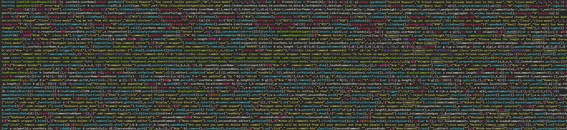
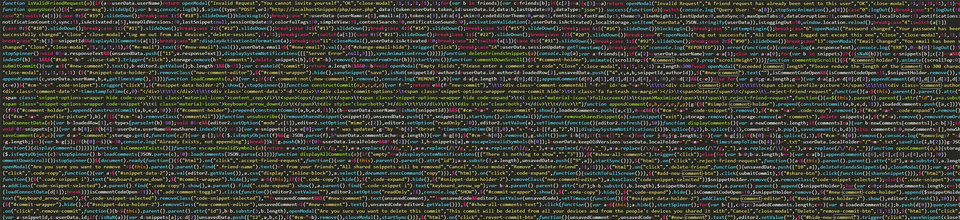

News and Events
December 2016
Carol Service
13 December 2016
Buisness and Civic Christmas Reception
14 December 2017
Staff Christmass Celebration
20 December 2016
January 2017
Occupational Therapy Conference - Celebrating our success in Grampian
26 January 2017
February 2017
Visit afternoon
01 Febuary 2017
Professorial Lecture: Pharmacy Practice Research Around The World
15 Febuary 2017
March 2017
Professorial Lecture: Venturing Out on the Thread of a Tune: The Researcher as Improviser in Public life
22 March 2017
April 2017
Hermeneutic phenomenology methodology course and symposium
03 April 2017 - 06 April 2017
Visit Afternoon
12 April 2017
Professorial Lecture: Artificial Intelligence and the Future
12 April 2017
May 2017
Joanna Briggs Collaboration European Symposium
19 May 2017
Professorial Lecture: Let Food Be Thy Medicine...:Did Hippocrates Get It Right?
24 May 2017